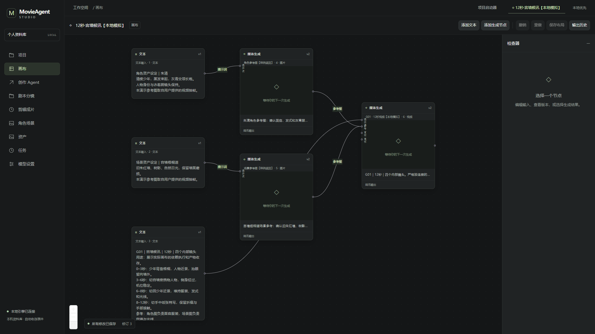

MOVIEAGENT / CANVAS WALKTHROUGH
一段 12 秒视频的画布，如何从输入走到结果
六个节点，五条连线，三个生成步骤。下方是当前 P5 桌面版实际运行后保存的截图和引擎快照。
图片与最终视频均来自用户提供的已有样例；本次没有调用真实模型。此页验证依赖执行、产物收存与播放，不验证模型画质、人物一致性或提示词遵从度。三阶段切换是截图回放，桌面窗口中保留可编辑的完成态。

这次实际核验到哪一步
| 能力 | 当前状态 |
|---|---|
| 可编辑文本、提示词与模型预设 | 已使用实际产品节点建立，不是单独绘制的流程示意图。 |
| 依赖执行与结果传递 | 两条图片步骤成功并收存后，视频步骤自动开始；最终三步 succeeded。 |
| 结果持久收存、画布回填、播放 | 已确认实际播放器可播放，视频 12.064 秒、854 × 480，通过 app-media 协议读取。 |
| 角色、场景专用业务节点 | 当前示例通过文本节点和通用生成卡表达；还未完整做成专用业务卡片。 |
| 一段内四个镜头的结构化编辑 | 当前写入导演稿文本；没有可独立编辑、校验的四段内部镜头表。 |
| 全局设定与多源文本合并 | 当前每个生成节点最多一条提示词连线；公共约束继承和多源文本编排仍需完善。 |
| 人物／场景的语义参考绑定 | 当前图像输入都连接到通用 reference 端口；还缺稳定的语义编号与用途对应校验。 |
| 画布内剪辑、合成节点 | 当前剪辑成片在独立页面，本次画布没有完整覆盖 LibTV 的内嵌剪辑节点。 |
本地样例视频
复用用户提供的已有文件，不是本次 AI 生成的新作品。仅用于验证真实任务的收存和播放。
桌面版里可以继续查看什么
已打开独立的 12秒·宫墙候讯【本地模拟】 项目。点击文本节点看完整设定，点击生成节点看模型、输入、任务及产物；右上角可以查看输出历史。
演示资料保存在 D:\movieAgent\verification\canvas-demo-20261029-12s，与真实项目和模型配置隔离。
快照记录了实际节点、固定媒体引用、计划与任务状态。初始：0/3；运行中：2/3；完成：3/3。